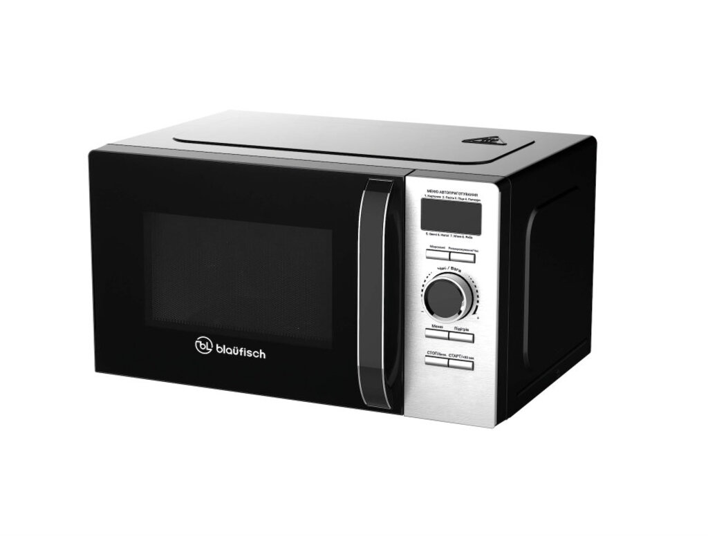
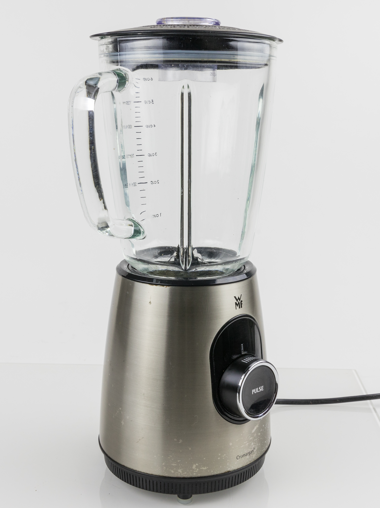
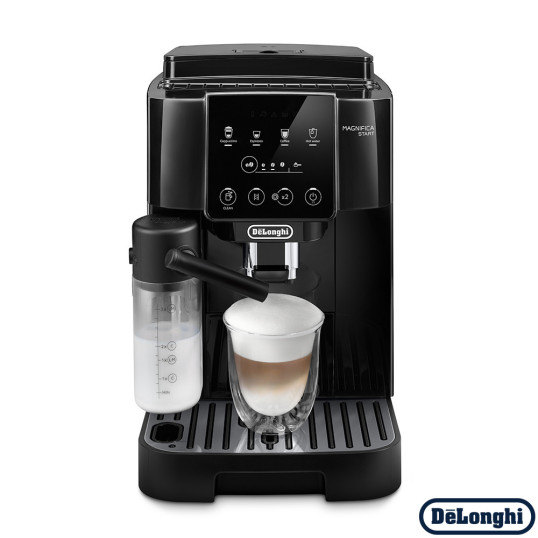
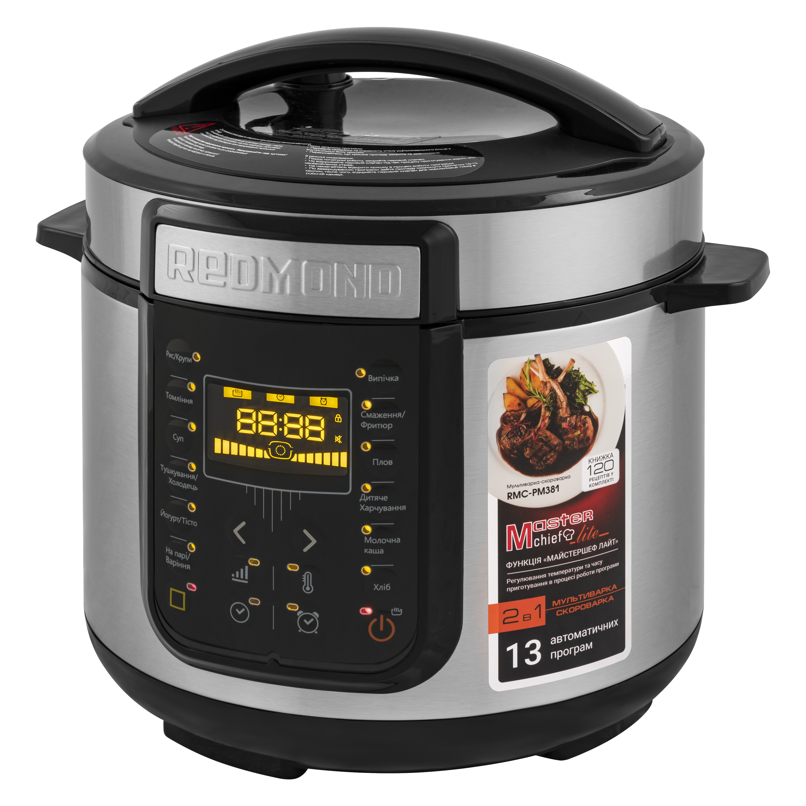

Кухонні прилади допомагають швидко та зручно готувати їжу вдома.
Мікрохвильова піч підходить для розігріву, блендер — для подрібнення, кавомашина — для приготування кави, а мультиварка — для автоматичного готування страв.
| Мікрохвильова піч | Блендер | Кавомашина | Мультиварка |
|---|---|---|---|
|
 |
 |
 |
 |
| Опис пристрою | Опис пристрою | Опис пристрою | Опис пристрою |
| Швидкий розігрів їжі | Подрібнення та змішування | Приготування кави | Автоматичне приготування страв |